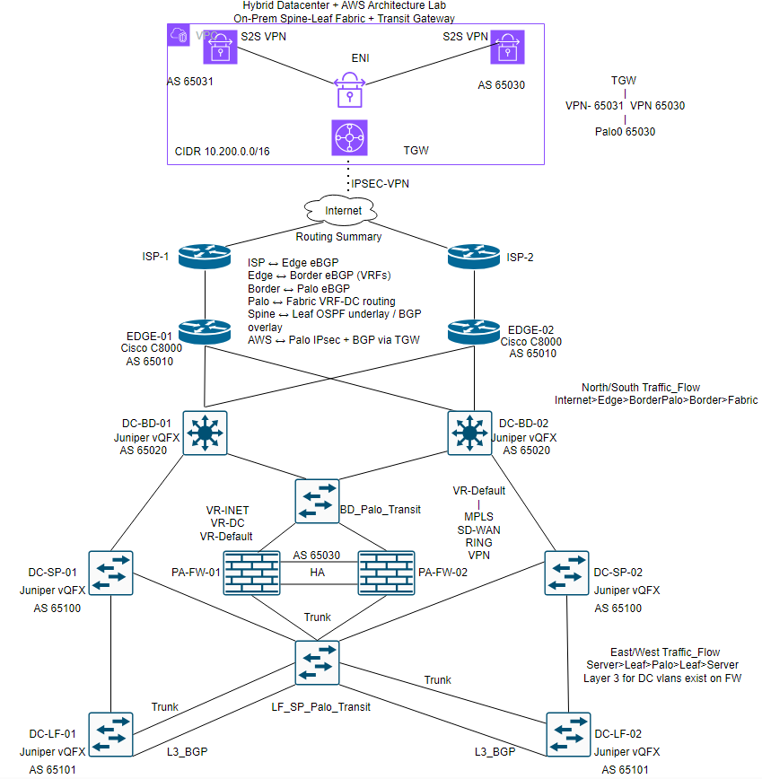

Palo Alto • Spine-Leaf Fabric • AWS Transit Gateway • BGP • VRFs
This lab simulates a production-style hybrid datacenter architecture integrating on-prem infrastructure with AWS using Palo Alto firewalls, Transit Gateway, and BGP-based routing. The design includes a spine-leaf fabric, dual ISP edge, VRF segmentation, and full traffic inspection.

North-south traffic flows from the internet through the edge routers into the Palo Alto firewalls and then into the datacenter fabric. East-west traffic between internal datacenter segments is routed through the firewalls to provide visibility, segmentation, and policy enforcement.